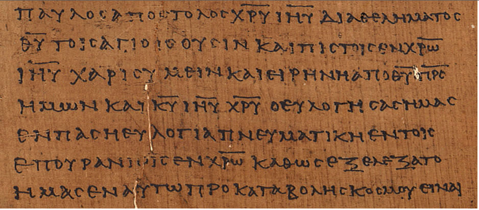
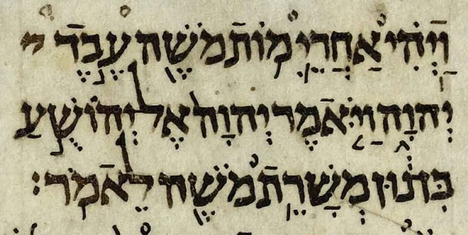

Work Experience
-
J&M Service
May 2016-June 2021
I worked as a full-service attendant, pumping gas and performing other services including: airing tires, washing windows, and checking oil for customers. I worked the counter and stocked products.
-
UPS
June 2021-June 2022
I worked as a package handler at the Earth City UPS warehouse, sorting incoming packages to their respective outbound docks according to their shipping labels.
-
Healthcare Components Group
June 2022-Current
I am a laser cutter machine operator cutting components to be assembled into bending sections for medical scopes. When needed, I also operate a stamping press which forms these components to the necessary shapes for assembly.
Education
-
Brookes Bible College: BTh, earned May of 2022.
-
LaunchCode: Web Development - Java, in progress.
About Me
Firstly, I am a devoted follower of Jesus the Christ. I have a beautiful wife named Ruth and a son named Moses. My interests include: Rollerblading, Ancient Greek (emphasis on Post-Classical Greek), and Biblical Hebrew (some fun examples below). My wife and I enjoy inline skating together when the weather is nice and we have the spare time. It is a great form of exercise and extremely fun! My love for Greek and Hebrew came from a desire to read the Christian Scriptures in their original form. I am pursuing a level of spoken and reading fluency in them in order to pass the skill down to my children and to others who desire to learn.
Ancient Greek
Ephesians 1:1–4a from p-46. (Source)
{kind=link}
Biblical Hebrew
Joshua 1:9 from the Aleppo Codex. (Source)
{kind=link}
Goals
I desire to enter a career in web development in order to be able to provide for my growing family and to develop web applications to assist in teaching Ancient Greek and Hebrew. My dream project is to create an immersive website in the ancient languages which automatically determines the necessary activities to help the user learn. It will incorporate video lessons, short stories, graded readers, and more all for free. Given my enjoyment of language learning, I would also like to learn a modern language—ideally for use in my future career.